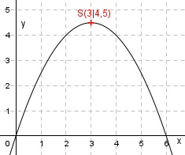
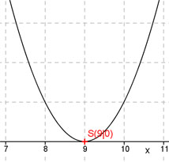
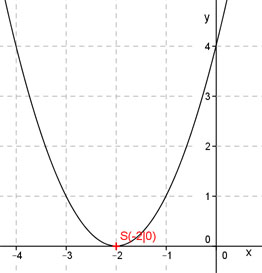
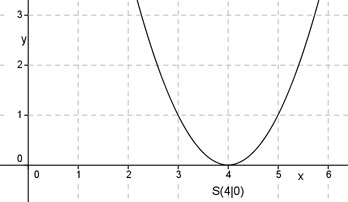
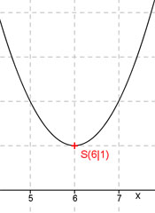
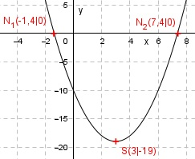

Wie löse ich Matheaufgaben?
Flächenberechnungen
Sie sehen ein gelbes Eingabefeld und die
Schalter: Prüfen und Lösung.
Tragen Sie Ihr Ergebnis ein, prüfen Sie es
oder starten Sie eine Lösung.
Aufgabe 26
Ein rechteckiges Grundstück A ist 861 m2 groß und
hat eine Breite von
21 m. Grundstück B ist 738 m2
groß und hat eine Breite von 18 m.
Wie lang sind sie jeweils?
Aufgabe 27
Ein trapezförmiges Grundstück hat eine Fläche von 400 m2. Die parallelen Seiten sind zur Straße 20 m zum Garten 12 m lang. Wie tief ist das Grundstück?
Aufgabe 28
Die 4 Grundstücke werden eingezäunt. Die Besitzer haben vereinbart, zwischen benachbarten Grundstücken nur einen Zaun zu ziehen. Wie lang ist der Zaun insgesamt?

Es sind mAufgabe 29
Wie groß ist die Gesamtfläche des Daches? Wie lang ist die Dachrinne?

Aufgabe 30
Wie groß ist das Abdeckblech?

Es sind cm2Aufgabe 31
Die Erde braucht 365 Tage, um die Sonne einmal zu umkreisen. Der Radius der Umlaufbahn ist 150 Millionen km. Wie lang ist die Umlaufbahn? Wie hoch ist die Geschwindigkeit der Erde?
Aufgabe 32
Ein Sender hat eine Reichweite von 65 km. Wie groß ist sein Sendegebiet?
Es sind km2Aufgabe 33
Der Deckel hat einen Durchmesser von 10 dm und die weiße Aussparung. Wie groß ist die Restfläche?

Aufgabe 34
Ein Leuchtturm hat eine Reichweite von 14 km. Er überstreicht einen Winkel von 90°. Wie groß ist die beleuchtete Fläche?
A = km2Aufgabe 35
Ein 150° Sektor eines kreisrunden Beetes mit einem Radius von 5 m wird mit Rosen bepflanzt. Für 1 m2 braucht man 9 Rosen. Wie groß ist die bepflanzte Fläche? Wie viele Rosen braucht man?
Aufgabe 36
Ein runder Brunnen mit einem Radius von 3 m steht auf einem runden Platz mit einem Durchmesser von 60 m. Wie groß ist die zu pflasternde Fläche A?
A = m2Aufgabe 37
Ein Gärtner soll rund um einen Platz, der 180 m lang und 105 m breit ist, Bäume im Abstand von 15 m anpflanzen. Wie viele Bäume braucht er?

Aufgabe 38
Ein Bauherr soll seine Baugrube von 15 m Länge
und 8 m Breite durch ein Band absichern.
Wie viel m Band braucht er,wenn er es im Abstand
von
2 m zur Grube anbringen will?
Aufgabe 39
Für 162 Fahrzeuge steht ein rechteckiges Gelände
von 55 m Länge und
39 m Breite zur Verfügung.
Für die Zufahrtswege braucht man 450 m2.
Wie viel Platz ergibt sich für 1 Fahrzeug?
Aufgabe 40
Eine Bauer will seine kreisrunde Wiese umzäunen. Sie hat eine Fläche von 254,5 m2. Wie lang muss der Zaun sein?
Er muss m lang sein.Aufgabe 41
Berechnen Sie die Fläche der Holzverkleidung, wenn Sie mit 20% für Verschnitt rechnen müssen.

Aufgabe 42
Ein Restgartengrundstück hat die Form eines Kreisausschnitts, mit einer Bogenlänge von 6 m und einem Radius von 4,5 m. Wie groß ist seine Fläche?
Es sind m2Aufgabe 43
Ein Bahngleis macht über einen Winkel von 35° einen 175 m langen Bogen. Welchen Durchmesser hat der Kreis, auf dem der Zug fährt?
Aufgabe 44
Für ein Spielfeld benötigt man 2 konzentrische Kreise, deren Radien sich wie 2:3 verhalten müssen. Wie verhalten sich deren Flächen?
Sie verhalten sich wie :9zurück